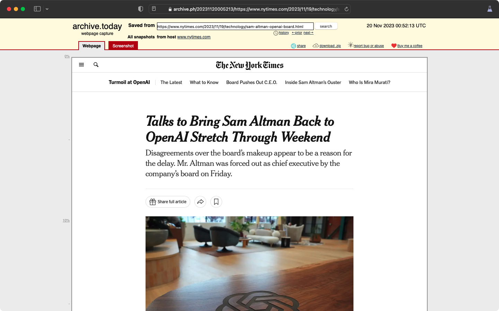
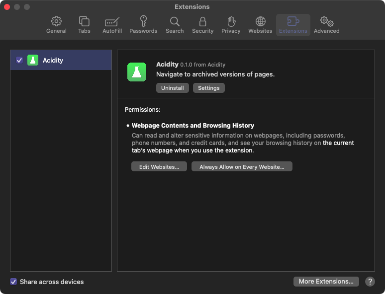

Acidity is a Safari extension for navigating to archived versions of pages.
You can change the extension settings by opening preferences, switching to the extensions panel, selecting Acidity, and clicking the settings button. 
Matches are used for automatically navigating to archived versions of pages depending on the URLs.
They can be added in the extension settings. For more information, see 'How do I change the extension settings?'.
For more information on the regex syntax for matches, see 'What is the syntax for matches?'.
Matches are JavaScript regexes created using the RegExp class.
They are modified to match the entire URL, so surrounding the regex with ^ and $ is not necessary.
For more information about regexes, see the
MDN documentation
on them.
Acidity does not collect any data.
activeTab: Used for navigating to the archived version of the current tab.tabs: Used for navigating to archived versions of matched tabs.storage: Used for storing and persisting settings across browser restarts.Send emails to acidity@octalwise.com.